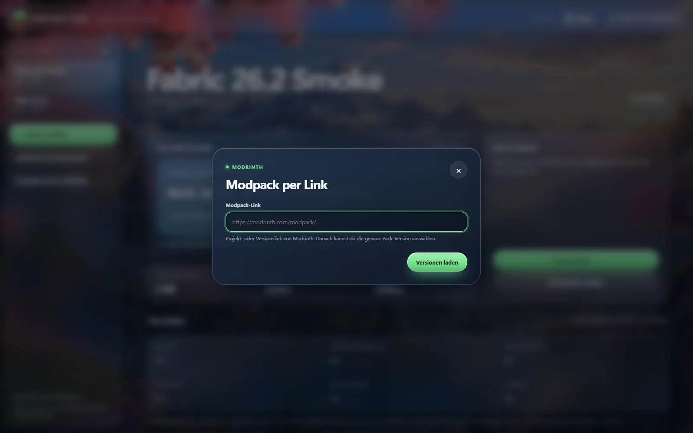
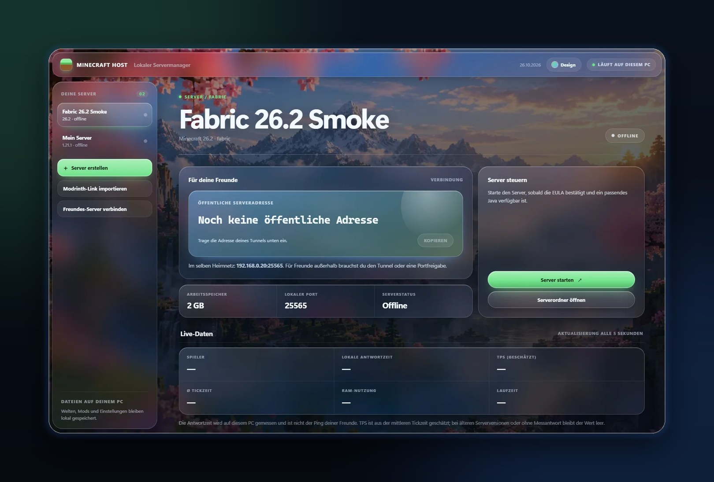
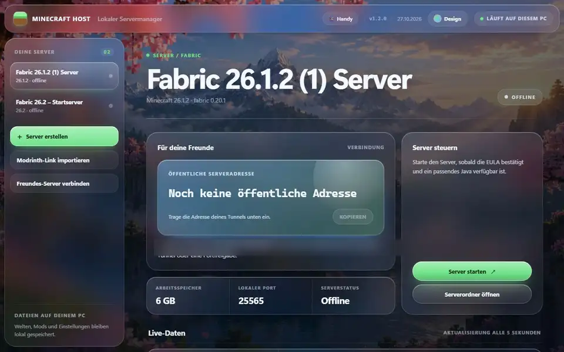
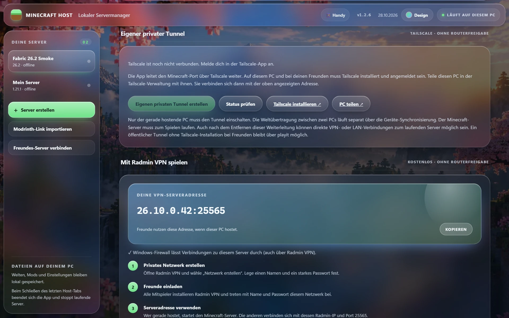

📦
Paste a Modrinth link, pick a version
Server-side files are downloaded over HTTPS and verified with SHA1/SHA512, overrides and server-overrides applied. Or use a .mrpack or a ready-made server pack ZIP.

Drop in a modpack, press start, invite your friends. Minecraft Host imports Modrinth packs, finds the right Java and shows the address your friends need – no port forwarding.


Real screens from the Windows app in the Polarlicht glass design.

The dashboard runs in your browser on 127.0.0.1, the server on your PC. No cloud, no subscription. (The app interface is currently German.)
Server-side files are downloaded over HTTPS and verified with SHA1/SHA512, overrides and server-overrides applied. Or use a .mrpack or a ready-made server pack ZIP.

Java 8/17/21/25 – including the Modrinth App runtimes – are detected. 1.21.x needs 21, 26.x needs 25.
No huntingPlayers, local response time, real RAM usage, uptime and, from 1.20.3, tick time with estimated TPS.
Every 5 slist, say Hello or whitelist add Name right from the app, with the last 180 lines in view.
Fabric and Vanilla directly; Forge and NeoForge via the official installer with an exact loader version.
SetupRecommended and free. The app shows your VPN address and checks Windows Firewall.
The LAN address appears in the overview automatically.
Signed agent bundled, started from the app, Minecraft Java tunnel to your port.
Optional for Fabric: Gate proxy and address are set up for free.

Switch in the top-right corner of the app. Your choice is saved on this PC and the change cross-fades smoothly.
Portable ZIP with MinecraftHost.exe plus the playit agent, Gate and Syncthing. No Python needed, and from 1.1.0 it updates itself in one click. The Minecraft server needs a matching Java.
Python 3.11+, standard library only.
python app.py pyinstaller MinecraftHost.spec
online-mode=true. Read and accept the Minecraft EULA before the first start.